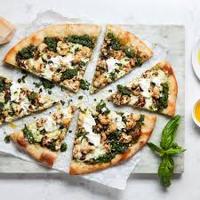

Discover the innovative flavors at our healthy pizza parlor, founded in 2024 by the renowned Chef Lorenda R. Cheeks. Our menu features a variety of nutritious pizzas crafted with fresh, locally sourced ingredients, ensuring a delightful dining experience without compromising on health. Each pizza is thoughtfully designed to cater to diverse dietary preferences, including gluten-free and vegan options. Enjoy a guilt-free indulgence as you savor our unique combinations that tantalize the taste buds while promoting wellness. Join us in a vibrant atmosphere that celebrates wholesome eating and community connection. Experience the future of pizza at Chef Cheeks' establishment, where health meets flavor. From our signature spinach chicken crust to our cauliflower-infused Margherita, every bite is a celebration of creativity and care. Our chefs are passionate about redefining comfort food with a nutritious twist, bringing excitement to every plate. We also offer handcrafted sauces made in-house daily, packed with herbs and spices for maximum flavor and minimal sodium. Seasonal specials keep our menu fresh and exciting, featuring ingredients sourced from local farms and growers. For families, foodies, and fitness enthusiasts alike, our parlor is a welcoming space to nourish both body and soul. Whether you dine in, take out, or order online, we’re here to serve you wholesome goodness with a gourmet touch.
